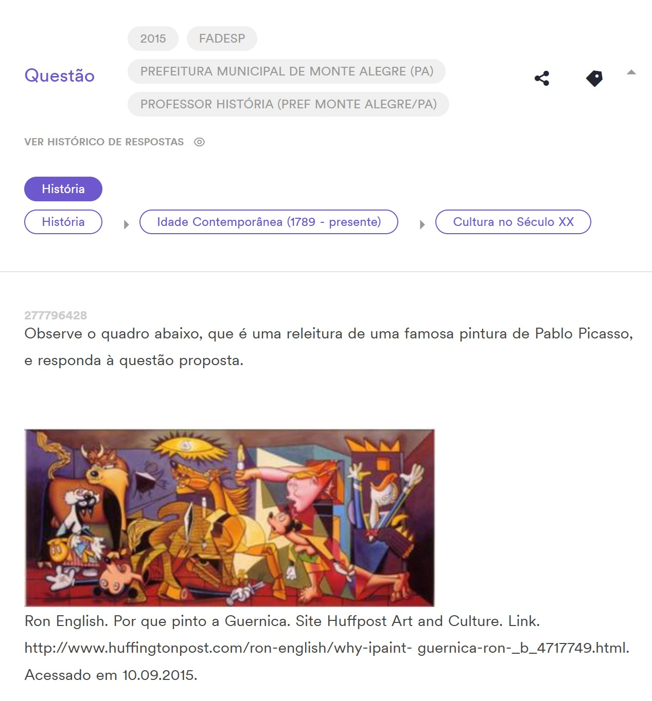
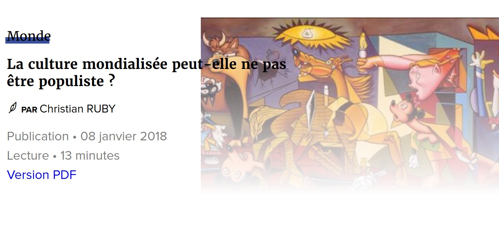

Exhibitions
Agit Pop America, Gallery Stendhal, New York, New York, US, April 3–30, 1997.

Modernism for a New Millennium, Sam Cintron Gallery, Jersey City, New Jersey, US, January 27–February 27, 2000.


Literature
The Art of Pop Culture, auction catalogue, Guernsey’s, Pacific Design Center, West Hollywood, California, January 1998.

Juxtapoz. “Modern English - - Spring 1998 - PDF”, Juxtapoz, 1998, p. 37.

The Central New Jersey Home News. Frederick Kaimann, “Big lofts small city”, The Central New Jersey Home News, 1999, p. 64.

Mi Gente Magazine. “Libertad para Ron English”, Mi Gente Magazine, no. 3, February 2000.

“Jersey City Artists Studio Tour – Featured Artists - Ron English – POPaganda and Cultural Jamming,” Jersey City Reporter, 1991.

“50 варијации на „Герника“ од Пикасо,” Окно.мк, July 11, 2014.

Notes
This work appears on the showcard for Agit Pop America.
Archival documentation supplied for The Art of Pop Culture is dated 1997, while the existing catalogue citation identifies the Guernsey’s auction catalogue as January 1998; both records are retained pending reconciliation.
The supplied Jersey City Reporter documentation is dated 1991, which predates the catalogue date of 1996 for this work; the date is retained as supplied pending verification.
Ancillary Documentation



